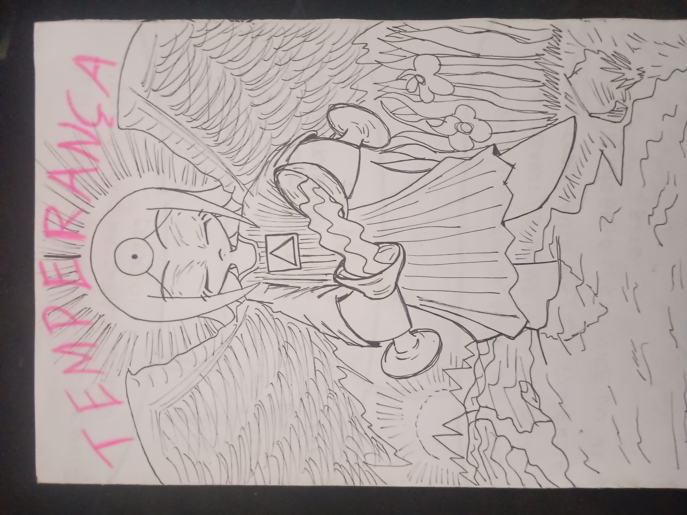
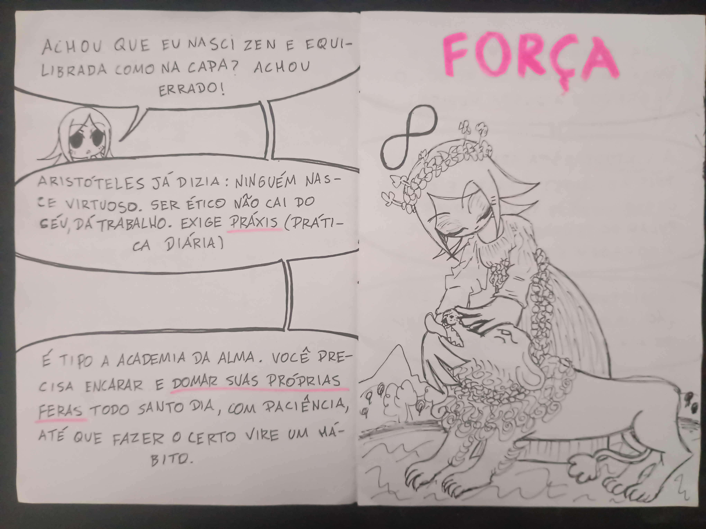
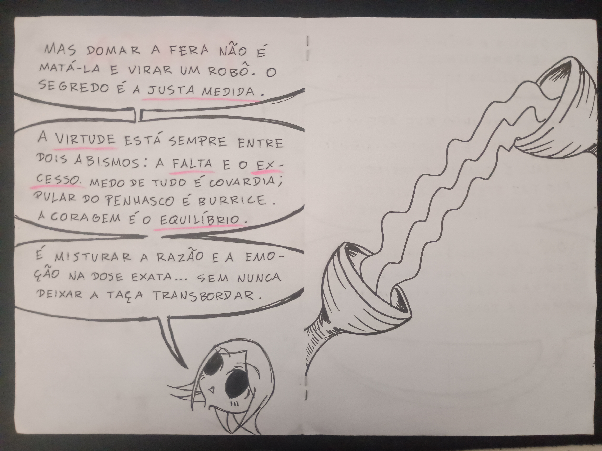
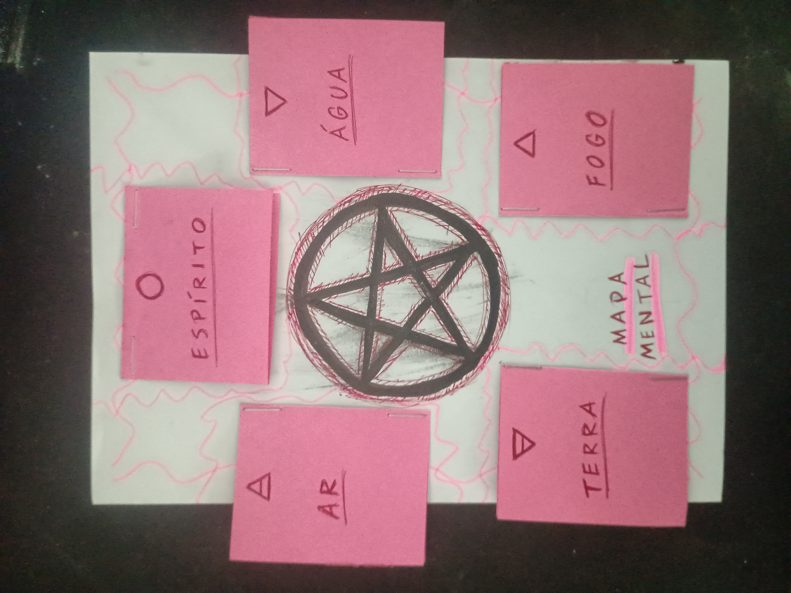
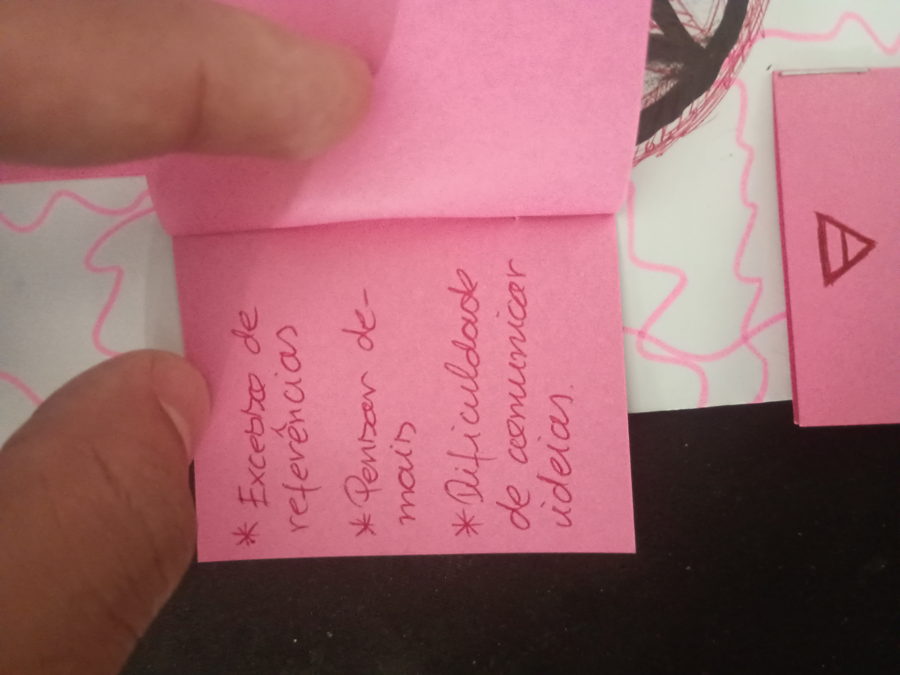
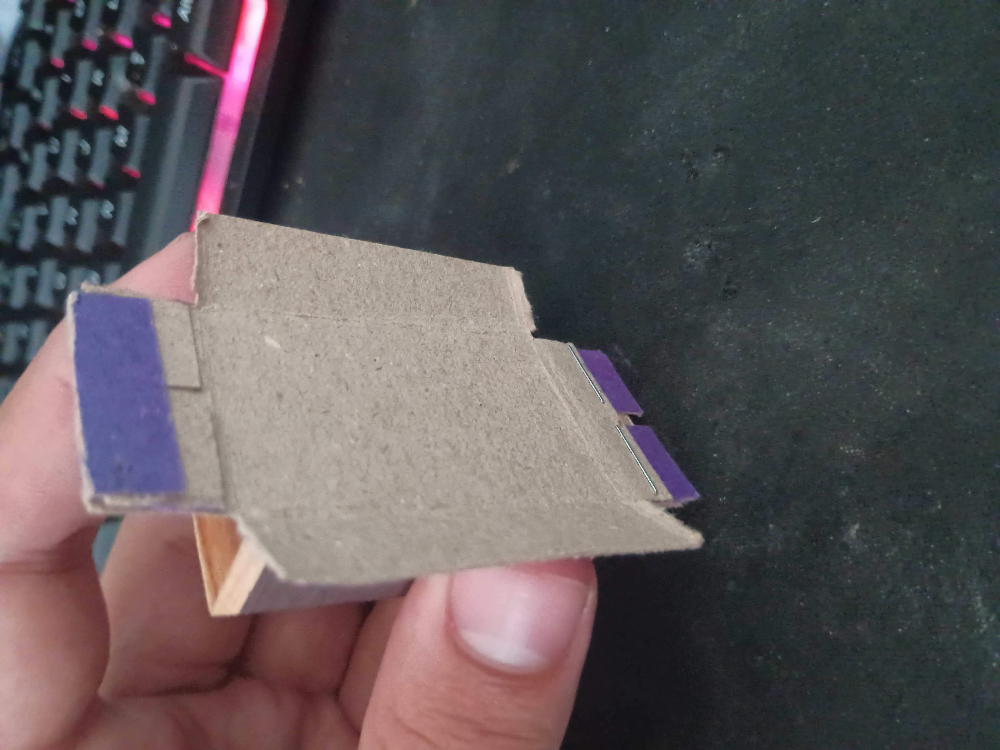
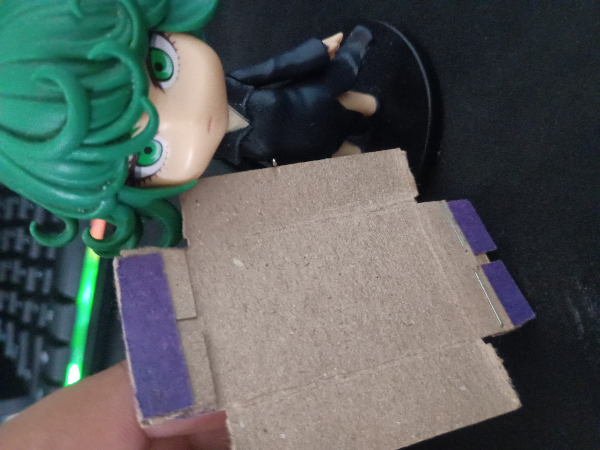
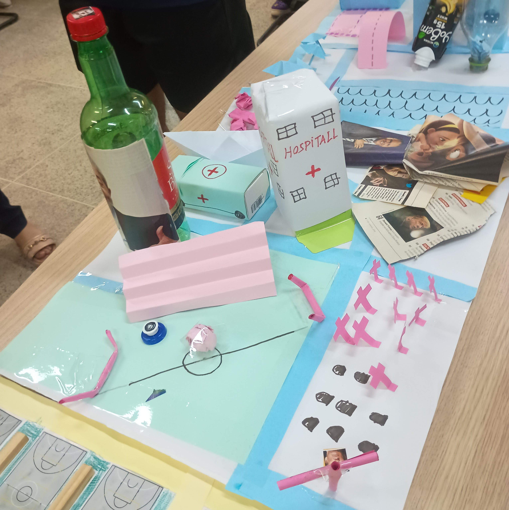

Zine sobre Ética
Hana, Tarô e Aristóteles





Filosofia das Ruas
Sou tarólogo, então já conheço alguns arcanos e seus significados. E como eu estava estudando a ética de Aristóteles, o paralelo com as cartas foi inevitável. Então, transmutei esse cruzamento de conhecimentos num zine.
A Jornada da Hana
Pra fugir do tom de palestra maçante e chata, convoquei minha personagem autoral, Hana. Ela assumiu o lugar das figuras clássicas do tarô, guiando a explicação das cartas e da ética. Materializar esses insights no papel foi um processo cru, braçal e incrivelmente imersivo.
A Práxis Diária
No fim das contas, a Eudaimonia (o florescimento humano pleno) não cai do colo dos deuses. Ela exige Práxis. Ser virtuoso não é sobre meditar de pernas cruzadas; é sobre ter a paciência de domar as próprias feras todo santo dia. E isso dá um certo trabalhinho...
Cartas de Tarô Pokémon
Um crossover entre três zines: Tarô, Pokémon e Nazismo

Colisão de Ideias
Juntar a filosofia do Tarô, o lore trágica de Pokémon e o tópico sensível que é o nazismo deu um certo trabalho. Mas o resultado foi um baralho desenhado à mão para medir o nível de fascismo e autoritarismo do cidadão consulente. Foi uma atividade ácida, bizarra e surpreendentemente coesa. Mas me contento muito com o resultado obtido.
O Problema e A Torre
A ideia era criar os 22 Arcanos Maiores, mas o prazo exigiu pragmatismo. Focamos nos extremos da nossa régua. O Mewtwo assumiu A Torre: o grau máximo de opressão, rebelião e colapso do sistema. É a destruição pura (O Pokémon em questão e a carta).
O Mundo
No polo oposto, o Celebi encarna O Mundo. É a carta de maior harmonia com o universo dos arcanos maiores. O fluxo da natureza intocada e da menor taxa de maldade possível.
O Mapa Mental de Bloqueio Criativo
Mapeando a pane criativa em cinco pontas




Pentáculo Mental
A tarefa era fazer um mapa mental sobre mim. Então resolvi mapear o que me paralisa criativamente. Peguei um pentáculo, que é um símbolo que curto muito; e transformei numa ferramenta de diagnóstico do bloqueio criativo.
Os Sintomas Elementares
Cada ponta do pentagrama assume um pilar de trava criativa. O clássico "excesso de referências", onde você pensa demais e executa de menos? Isso é pura disfunção do Elemento Ar. Atribuir falhas aos elementos foi meu jeito de exorcizar a pane no meu sistema criativo.
Catarse de Papel
O bloqueio só assusta quando fica abstrato na cabeça. Reduzir as inseguranças criativas a categorias básicas (Éter/Espírito, Água, Fogo, Terra e Ar) tirou o peso da paralisação, fazendo eu visualizar e categorizar melhor os tipos de bloqueios que possuo.
O Fósforo de Mochila
Resgatando memórias da minha infância


Alquimia de Balcão
O desafio era transformar lixo em brinquedo. Cresci no restaurante dos meus pais desmontando caixas de fósforo vazias que eu encontrava por lá. Então decidi resgatar essa memória e aplicar uma verdadeira alquimia de sucata.
O Fósforo de Mochila
Esse bonequinho é invenção minha desde pivete (apesar de posteriormente encontrar semelhanças com o vulcan 300 de Zatch Bell). E pra provar a auto-estima inabalável desse meu bonequinho, ele posa orgulhosamente ao lado de sua lindíssima e chatérrima namorada, a Tatsumaki ❤️.
Tal Qual o Passado
Construir esse boneco foi uma volta no tempo pra mim. Apesar de achar que eu poderia costumizar mais ele. Mas decidi em criar ele e manter tal qual era na minha infância, sem pôr nem tirar.
Hospitall, São Braz e o Canhão
Construindo uma Cidade de Papel muito louca

O Hospitall
O desafio era o Inusitado, então jogamos a racionalidade no lixo. A lore começa no campo de futebol: lá, a gravidade é aumentada. Os jogadores se arrebentam e vão direto pro nosso "Hospitall".
Logística da Morte
O problema? O soro intravenoso dos pacientes é à base de Vinho São Braz. A taxa de óbito é de 100%. Por pura logística, colamos um cemitério do lado. O lixão municipal ser próximo ao hospitall também é por conta de logística, para descartar pertences de pacientes que vierem a óbito (todos). Muito prático.
Defesa e Mobilidade
Para proteger essa infraestrutura caótica, fincamos um "canhão" na fronteira da maquete. Na mobilidade, ambulâncias transitam em terra e barcos cobrem o mar.